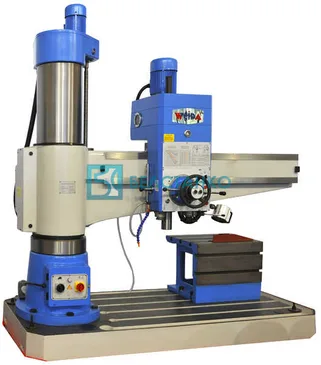
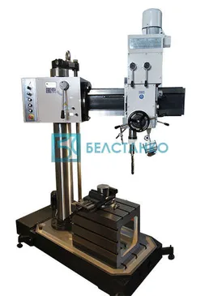
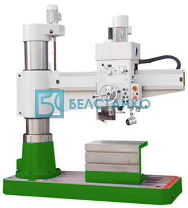
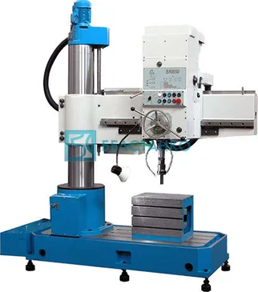
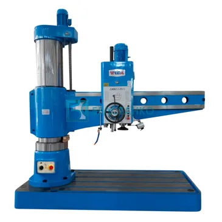

Z3050х16/1Радиально-сверлильный
Станок
2 086 200 ₽
Станок
2 086 200 ₽
Радиально-сверлильный станок
2 195 772 ₽
Радиально-сверлильный станок
5 304 828 ₽
Радиально-сверлильный станок
4 650 000 ₽
Радиально-сверлильный станок
Цена по запросу

Радиально-сверлильный станок
1 620 000 ₽
Радиально-сверлильный станок
4 050 000 ₽
Радиально-сверлильный станок
5 250 000 ₽
Радиально-сверлильный станок
2 735 868 ₽